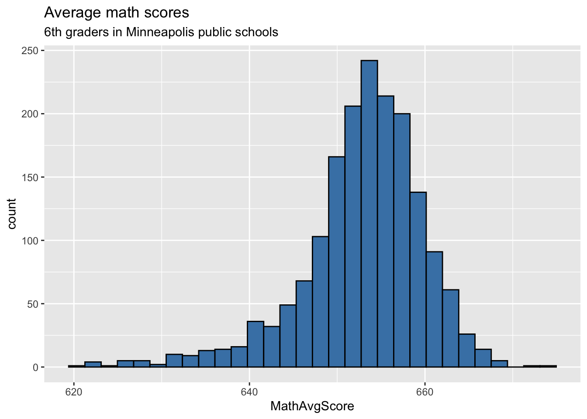
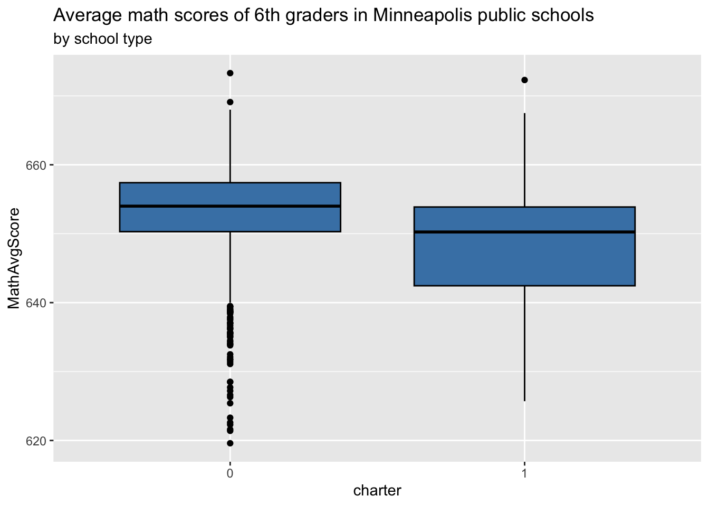
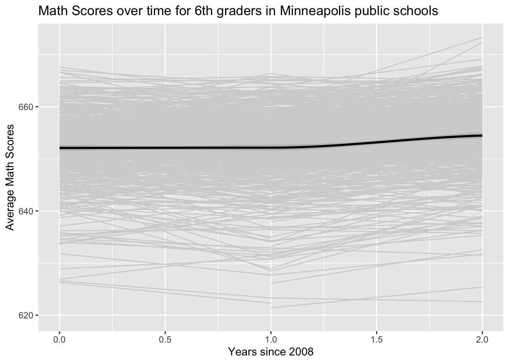

library(tidyverse)
library(knitr)
library(lme4)
library(broom.mixed)
library(skimr)Lecture 14 AE: Modeling two-level longitudinal data
charter <- read_csv("data/charter-long.csv") |>
mutate(urban = factor(urban),
charter = factor(charter))Exploratory data analysis
Caution
This is not a complete EDA for this data.
Univariate EDA
ggplot(data = charter, aes(x = MathAvgScore)) +
geom_histogram(fill = "steelblue", color = "black") +
labs(title = "Average math scores",
subtitle = "6th graders in Minneapolis public schools")
Bivariate EDA
ggplot(data = charter, aes(x = charter, y = MathAvgScore)) +
geom_boxplot(fill = "steelblue", color = "black") +
labs(title = "Average math scores of 6th graders in Minneapolis public schools",
subtitle = "by school type")
Ex 1
Make a scatterplot of the average math score versus the proportion of students who receive free or reduced lunches in a school (based on 2010 figures).
## scatterplot
Ex 2
What do you observe from each bivariate plot?
Lattice plot
Make a lattice plot of the average math scores over time for 24 randomly selected schools.
set.seed(030424)
# get sample of 24 schools
sample_schools <- charter |>
distinct(schoolid) |>
sample_n(24) |> pull()
# get data for those schools
sample_data <- charter |>
filter(schoolid %in% sample_schools)## lattice plotSpaghetti plots
Plot average math scores over time for each school. Apply a LOESS smoother (locally estimated scatterplot smoother).
ggplot(data = charter, aes(x = year08, y = MathAvgScore)) +
geom_line(aes(group = schoolid), color = "light gray") +
geom_smooth(color = "black", linewidth = 1, method = "loess") +
labs(x ="Years since 2008",
y ="Average Math Scores",
title = "Math Scores over time for 6th graders in Minneapolis public schools")
Ex 3
What features are easier to observe in the lattice plots versus the spaghetti plot?
What features are easier to observe in the spaghetti plot versus the lattice plot?
Ex 4
- Make a separate spaghetti plot of average maths scores over time by school type (charter vs. non-charter).
# spaghetti plot by school type
Ex 5
How do the typical math scores from charter and non-charter schools compare over time?
How does the variability in math scores from charter and non-charter schools compare over time?
Unconditional means model
Ex 6
Fit the unconditional means model and calculate the intraclass correlation.
# Fit the unconditional means model# Calculate the intraclass correlationUnconditional growth model
Ex 7
Fit the unconditional growth model.
# Fit the unconditional growth model
Ex 8
Calculate the \(Pseudo R^2\) to estimate the change of within school variance between the unconditional means and unconditional growth models.
# Pseudo R^2Model with school-level covariates
Ex 9
Fit the model with the school-level covariates.
# Fit model with school level covariates